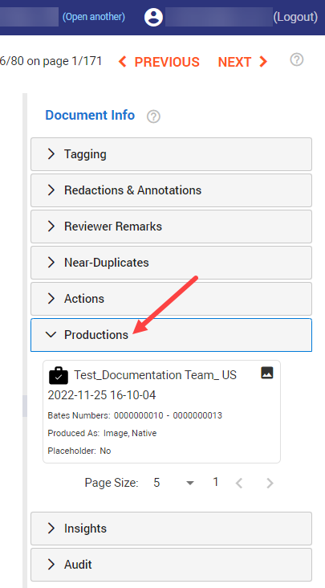

Note I: View all produced documents of a production via Facet View (Browse). Make sure the Productions facet is selected.
In Document View, view if, when, and how the currently open document (image) has been produced. If no documents are produced, Productions is not available.
|
|
Note I: View all produced documents of a production via Facet View (Browse). Make sure the Productions facet is selected. |
|
|
Note II: You can only view Productions if you have a role with the proper permission (Access produced document content) assigned to you. |
In Document View, on the right side of the screen, select Productions.

Select a production of the currently open document (a selected production has a blue border).
View the production name, bates numbers, how the document has been produced (as an image, native and/or text file) and placeholders.
Toggle between Image View (shows you the currently open document and all additions made during review)/Media View (audio/video files) and Produced View (shows you how the currently open document was actually produced for the selected production). Produced View allows you to check if redactions are in-place, if the bates numbers are OK, if the quality of the produced image is OK, and so on.